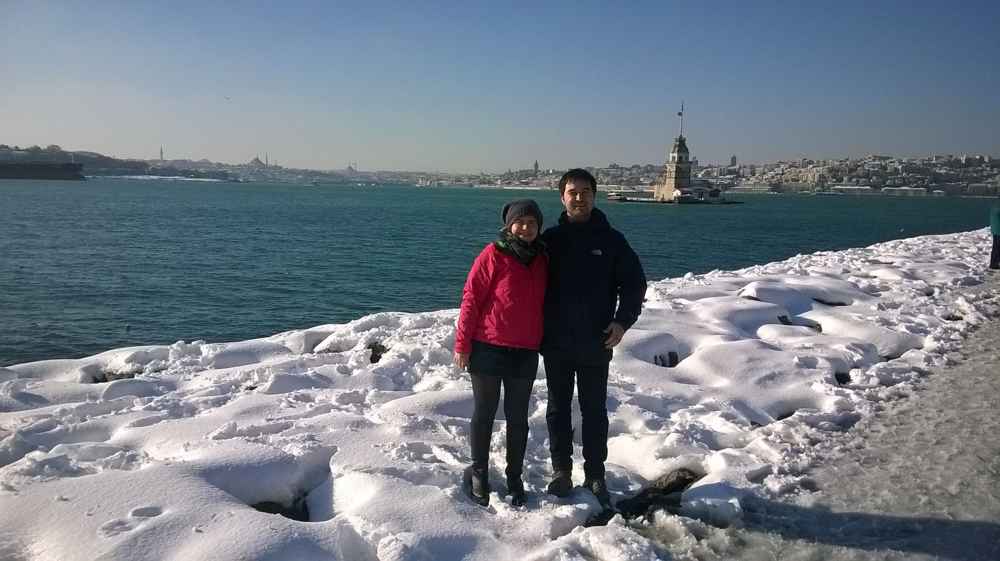

Interview Företagsplatsen: Seçkin Savaşçı
Interview with Seçkin Savaşçı
This is the fourth post of my series of interviews of my colleagues at FTGP.
Seçkin is the newling sofware engineer at Företagsplatsen, coming to us straight from Turkey (well, that's not entirely true, as he got his Master degree in Stockholm).
Figure 1: Seçkin
Hi Seçkin, thanks for taking this interview. First things first, could you tell me a bit about yourself?
I'm Seçkin Savaşçı (rough translation : distinguished warrior). I'm a 24 year old computer engineer from Turkey. I got my BSc from Bogazici University, Istanbul. I initially came to Sweden for my master studies in distributed computing at KTH, decided to stay because of the weather(!). I have recently started working at Företagsplatsen, so I am the new guy around here.
Some random facts about me: I play various instruments and played football, basketball, and table tennis competitively. I like to cook and I love to eat. I know some Krav Maga. My hometown, Adana, is famous for the original Kebab (Look at this beauty). I have lived in Adana, Istanbul, Utrecht, and Lisbon before.

Question #2: What do you do on your free time? (both in front of and away from your computer)
I aim to have no free time. However, I get lazy from time to time. In that case, reading a book or simply doing nothing is my usual routine. If you ask me what I do in my pseudo-free time and not get paid in the process, then there are several activities : I try to attend as many football meetups as I can in Stockholm Sporty People Meetup. I play some computer games, I have started experimenting to stream it. I'm planning to commit serious time and effort for mastering my instruments when I finally bring them from my family home.
Question #3: How was your first week in the development team?
It was literally awesome; scary but inspiring. This is actually my first job so everything about workspace and working in general is new to me. As expected, I spent some time setting up my development machine.
I didn't have proper introduction to most of the aspects of the project but I quickly contributed to the team; I solved some problems, even one or two was kind of critical. I also did some mistakes, once pushed to a wrong branch and another time merged my own commits.
I tend to ask plenty of questions, so I did. My first week was a lot of fun. (Warning : Today was 13th day of my career.)1

Figure 3: Seçkin and Melike in Uskudar, Istanbul
Question #4: During her interview, Louise had a question for the next interview
What do you think that your personality can provide to Företagsplatsen, as a co-worker, that no one else at this company can?
It is a hard question because it prerequisites understanding others' personalities. I don't have a definite answer but I can say that I am more inclined to rebuilding things from scratch. I will probably be leading when we go for v4.
Question #5: If you were giving an interview, what question would you ask another member of the team?
"What makes you mad? Really really mad, not something ephemeral."
Thank you Seckin!
comments powered by DisqusFootnotes:
This interview started some months ago, and Seçkin answered this question in August 2015.